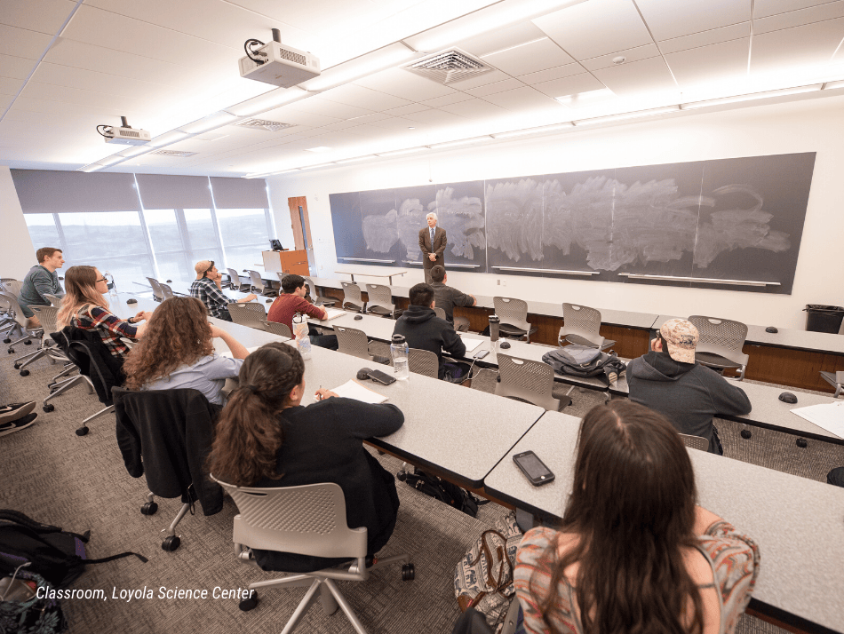
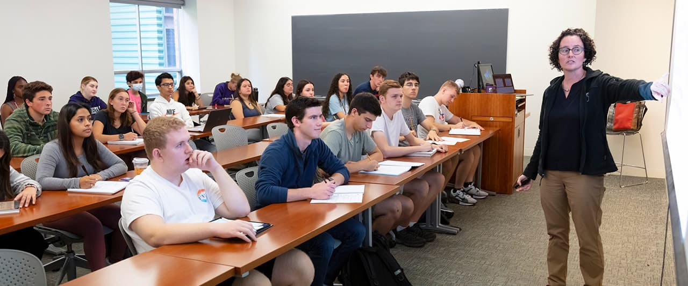
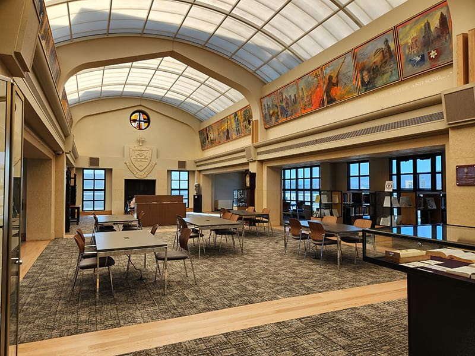

Communication & Media
Explore storytelling, media, communication and the ways messages shape communities.
ACADEMICS
With 70 bachelor's degree programs and 47 minors, Scranton gives students room to explore, specialize and discover new directions.

EXPLORE
Explore storytelling, media, communication and the ways messages shape communities.
Build skills in consumer behavior, strategy and modern business communication.
Prepare for patient-centered care through rigorous academics and professional preparation.
Study human behavior, thought and development through research and applied learning.
Develop analytical and financial decision-making skills for today's organizations.
Explore movement, health and human performance through science-based study.
LEARNING HERE
Scranton students learn through discussion, research, collaboration and experiences that connect classroom knowledge with the world beyond campus.

YOUR RESOURCES
From specialized academic spaces to the Weinberg Memorial Library, students have places to collaborate, research and focus.


Explore a Scranton education built around curiosity, purpose and your future.
Explore Admissions